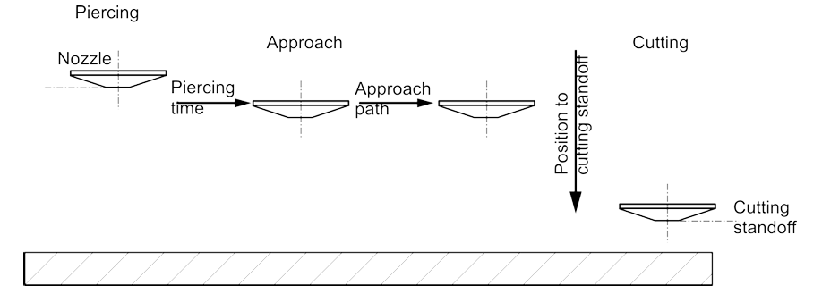

Corte
Estrategias de arranque
Para evitar daños en el contorno por penetración, el material se penetra a unos pocos milímetros a un lado del contorno. A continuación, el contorno se aproxima utilizando diversas estrategias en función del material, el grosor del material y el tamaño del contorno.
Aproximación normal
Con una aproximación normal, el corte se realiza directamente desde el agujero de inicio con los parámetros de corte de la tabla de corte adecuada.
Aproximación reducida
El contorno se aproxima a una velocidad reducida. Potencia, frecuencia, distancia de la boquilla.

Aproximación con precorte
Después de la penetración, se realiza un corte de unos pocos milímetros a velocidad reducida, dependiendo del espesor del material. A continuación, el cabezal de corte vuelve al agujero de inicio utilizando la última velocidad de posicionamiento activa y luego se aproxima el contorno y se corta con los parámetros de la tabla de corte adecuada.
Marcado y graneado
Las partes del material se marcan mediante un cambio de color en la superficie del material. El marcado normalmente ya no se puede percibir después de esmaltar o pintar, ya que solo se elimina un mínimo de material.
Procedimiento de corte
Corte en contorno grande, medio y pequeño
En el contexto de la programación CNC de TRUMPF y del corte por láser, los conceptos de contornos grandes, medios y pequeños se relacionan con el tamaño y la complejidad de diferentes características geométricas en un proceso de corte o mecanizado. Estas distinciones ayudan optimizar el movimiento de la herramienta, las estrategias de corte y la velocidad de procesamiento.
1. Contornos grandes
-
Los contornos grandes se refieren a cortes largos y continuos o perfiles externos de una pieza.
-
Suelen ser recorridos de corte primarios que definen la forma externa.
Características:
-
Rectos o suavemente curvados.
-
Menos interrupciones.
-
Se pueden cortar a velocidades más altas ya que hay menos riesgo de acumulación térmica o pérdida de precisión.
2. Contornos medios
-
Características de tamaño mediano dentro o a lo largo de la pieza, como grandes recortes, agujeros o ranuras.
-
Estos son más complejos que los contornos grandes, pero no tan intrincados como los contornos pequeños.
Características:
-
Pueden requerir ajustes en la velocidad de corte debido a detalles moderados.
-
Necesitan cierto nivel de control de precisión para mantener la exactitud.
-
Pueden influir en la disipación de calor y el comportamiento del material.
3. Contornos pequeños
Características:
-
A menudo implican radios cerrados, formas intrincadas o áreas de corte densamente compactadas.
-
Propensos a efectos térmicos (fusión, rebabas, deformación del material).
-
Pueden requerir estrategias adaptativas como potencia reducida, control fino de la boquilla, o técnicas de microunión.
Curvas de calibración analógica
TRUMPF utiliza una curva de calibración de 3 puntos para el control láser analógico.

FlyLine
FlyLine es una estrategia de mecanizado que puede ayudar a ahorrar una cantidad considerable de tiempo al mecanizar ciertos tipos de chapas. FlyLine es especialmente eficaz para enrejados de agujeros.
-
El rayo láser se enciende y apaga sobre la marcha con un alto grado de precisión de posicionamiento.Los ejes no se detienen cuando el rayo láser se enciende y apaga.
-
Los contornos individuales que no están en una línea se dividen en secciones de contorno paralelas al eje. Esto permite evitar el mecanizado de esquinas.La velocidad se reduce solo para los pocos cambios de dirección.